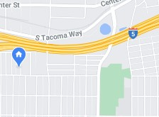

Preston Idaho
5-Day Forecast
| Sunday | Monday | Tuesday | Wednesday | Thursday |
|---|---|---|---|---|
|
Cloudy ℉ |
Partial Cloudy ℉ |
Nice ℉ |
Some clouds ℉ |
Beautiful ℉ |
Getting outdoors and building family

If you like being with your family and would like for the chance to be closer to nature as a family. You will have a good weather window in which you can do just that. If you enjoy being outdoors no madder the weather well then get out there and enjoy all the local trails. In this article we will talk about some of the different types of trails that are around Preston. We will go over some of the clothing options you might want to think about that will allow you to have the best time possible no matter the what the weather is going to do while you are out in nature.
Contact Information
The Weather site
🏠 Address:
155 Weather St Tacoma, WA 98418
☎ Phone:
(888) 456-4857
✉ Email:
weather@prestoncity.org